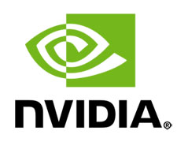

L'inform


Pack HP Pavilion GTX + Ecran 144 Hz + Clavier RGB + Souris RGB + Tapis Roccat
Réf HP : BUN32671
PC de bureau - Intel Core i5-8400 Hexa Core 2.8 GHz - 8 Go DDR4 - SSD 128 Go - HDD 1 To - NVidia GeForce GTX 1060 - Windows 10 - Clavier et Souris Inclus


Réf HP : BUN32671
PC de bureau - Intel Core i5-8400 Hexa Core 2.8 GHz - 8 Go DDR4 - SSD 128 Go - HDD 1 To - NVidia GeForce GTX 1060 - Windows 10 - Clavier et Souris Inclus
Pavilion Gaming 690-0990nf
HP
Garantie légale de conformité : 2 ans

Pavilion gaming 690-0099nf (4RT80EA)

Un ordinateur de bureau puissant qui offre les performances nécessaires pour jouer
L'ordinateur de bureau de jeu HP Pavilion est centré sur des performances fluides et des graphismes nets, le tout dans un design audacieux. Cet ordinateur offre les toutes dernières technologies ainsi que des possibilités de mise à niveau, pour des performances à jour en permanence. Préparez-vous à jouer avec puissance et style, aujourd'hui et pour des années.
Carte graphique Nvidia
Immergez-vous dans des graphismes et une jouabilité fluides. Avec la NVIDIA GeForce GTX 1060 , les décalages et ralentissements appartiennent au passé.
Performances haute vitesse
Libérez le plein potentiel de votre ordinateur avec un processeur Intel Core i5 8400 et jusqu'à 16 Go de mémoire RAM DDR4 (8Go de base dans la configuration).
Design audacieux et remarqué
Avec son cadre à facettes étonnant, sa finition brossée et son éclairage vert LED, cet ordinateur de bureau est fait pour les audacieux. Pour couronner le tout, des logements d'extension internes vous permettent de mettre à niveau votre carte graphique, votre mémoire et plus encore pour suivre au plus près les dernières évolutions.
Sortie son Surround 5.1
Avec tous les ports nécessaires au son Surround 5.1 authentique, offrez à vos films préférés, à vos émissions ou vos morceaux de musique, une qualité audio immersive aux nuances enrichies, en procédant simplement à la configuration d’un haut-parleur doté du Son Surround.
Câble USB-C
Transférez des documents à grande vitesse vers/depuis votre stockage externe grâce à ce port USB-C. De plus, il est réversible et simple à connecter.
HP Jumpstart
Lors du premier démarrage de votre PC, obtenez une procédure pas à pas personnelle tout au long de la configuration et une vue d’ensemble informative des fonctions de votre PC.
Fluidité parfaite, réflexes au sommet
KEYZ IRIDIUM

Sousis confortable, résistante et d'une grande précision
Kanga Mini
Tapis de souris Gamer souple en tissi de qualité
HP
Garantie légale de conformité : 2 ans
Pavilion gaming 690-0099nf (4RT80EA)
Un ordinateur de bureau puissant qui offre les performances nécessaires pour jouer
L'ordinateur de bureau de jeu HP Pavilion est centré sur des performances fluides et des graphismes nets, le tout dans un design audacieux. Cet ordinateur offre les toutes dernières technologies ainsi que des possibilités de mise à niveau, pour des performances à jour en permanence. Préparez-vous à jouer avec puissance et style, aujourd'hui et pour des années.

Carte graphique Nvidia
Immergez-vous dans des graphismes et une jouabilité fluides. Avec la NVIDIA GeForce GTX 1060 , les décalages et ralentissements appartiennent au passé.
Performances haute vitesse
Libérez le plein potentiel de votre ordinateur avec un processeur Intel Core i5 8400 et jusqu'à 16 Go de mémoire RAM DDR4 (8Go de base dans la configuration).
Design audacieux et remarqué
Avec son cadre à facettes étonnant, sa finition brossée et son éclairage vert LED, cet ordinateur de bureau est fait pour les audacieux. Pour couronner le tout, des logements d'extension internes vous permettent de mettre à niveau votre carte graphique, votre mémoire et plus encore pour suivre au plus près les dernières évolutions.
Sortie son Surround 5.1
Avec tous les ports nécessaires au son Surround 5.1 authentique, offrez à vos films préférés, à vos émissions ou vos morceaux de musique, une qualité audio immersive aux nuances enrichies, en procédant simplement à la configuration d’un haut-parleur doté du Son Surround.
Câble USB-C
Transférez des documents à grande vitesse vers/depuis votre stockage externe grâce à ce port USB-C. De plus, il est réversible et simple à connecter.
HP Jumpstart
Lors du premier démarrage de votre PC, obtenez une procédure pas à pas personnelle tout au long de la configuration et une vue d’ensemble informative des fonctions de votre PC.
Fluidité parfaite, réflexes au sommet
|
Fréquence d'affichage 144 Hz pour une fluidité totale |
| Profitez d'une lisibilité optimale de l'action et ne vous faites plus surprendre par vos opposants grâce au G2460FG et la dalle full HD avec fréquence d'affichage 144 Hz et réactivité record de 1 ms seulement | |
| Grâce à lui, vos réflexes seront toujours au top et vous disposerez des performances adéquates pour atteindre le sommet du classement. | |
| Un plus grand confort pour vos yeux | |
| L'écran embarque la technologie anti-scintillement Flicker-Free, éliminant les vibration de lumiosité pouvant causer une fatique prématurée des yeux. Vous pourrez jouer de longues heures dans un confort total ! | |
| Connectique complète, enceintes intégrées | |
| La connectique ultra-complète Displayport / HDMI / DVI / VGA permet de connecter l'écran simultanément à votre PC, votre console et votre lecteur favori, en faisant votre centre de divertissement principal. Un must pour un changement de plateforme simple et intuitif ! | |
| Deux haut-parleur stéréo sont intégré à l'écran, permettant de disposer d'un son nomade partout avec vous. Une prise casque permet de brancher vos écouteurs/casque et profiter du son sans déranger vos voisins ! |
KEYZ IRIDIUM
 |
UNE MEMBRANE ULTRA REACTIVE |
| Grace au fast response membrane chaque touche du clavier est conçue pour améliorer la sensation tactile en offrant un retour rapide ultra rapide pour des performances accrues. |
| RÉTROÉCLAIRAGE OPTIMAL |  |
| Avec ses cinq zones d'éclairage individuelles, changez les couleurs pour qu'elles correspondent à votre configuration, à des jeux spécifiques ou simplement à vos couleurs préférées. Dans la pénombre ou dans le noir, la visibilité des touches demeure optimale grâce au rétroéclairage par LED. |
 |
6 MACRO REPROGRAMMABLES Grâce à ses 6 macros programmables et accessibles directement sur le clavier, il est possible de programmer une action nécessitant jusqu'à 30 touches et qui sera exécutée par une simple pression sur une seule touche. C'est la maîtrise assurée de toute action complexe. |
| DES FONCTIONS INNOVANTES POUR PLUS D'EFFICACITE En bloquant la touche Windows, plus de risque dêtre éjcté du jeu! Pour accorder son style de jeu, les touches de déplacement ZQSD peuvent sinverser avec les fléches directionnelles. |
 |
Sousis confortable, résistante et d'une grande précision
 |
Fraguer sans se ruiner La souris Harpoon RGB de Corsair vous offre la qualité éprouvée et les performances d'une souris Gamer, sans le superflu, pour vous hissez à la tête des classements de vos jeux favoris, sans exploser votre porte-feuille ! Basée sur un capteur optique à la résolution ajustable jusqu'à 6000 DPI, la Harpoon RGB dispose de toute la précision nécessaire pour atteindre vos cibles et faire mouche dans les FPS et jeux d'action, ou chaque millimètre peut faire la différence entre un tir réussi ou non. Le polling-rate de 1000 Hz assure une réactivité parfaite de la souris à 1 ms. L'ergonomie travaillée de la Harpoon RGB permet une prise en main confortable, épousant la forme de votre main, et une tenue ferme grâce au revêtement texturé sous le pouces.Démarquez vous avec une couleur qui vous est propre grâce au système d'éclairage LED RGB 16.8 millions de couleurs. |
| Ergonomie idéale En tant que joueur, il est indispensable de disposer d'une souris confortable pour reposer sa main et jouer dans les meilleurs conditions possibles. La forme ergonomique de la Harpoon RGB permet une préhension confortable par toutes les mains. La molette crantée est équipée d'un revêtement en caoutchouc nervuré, pour une adhérence optimale de votre doigt, pour des défilements et changements d'arme ultra-rapides en jeu. Un sélecteur de DPI est présent à l'arrière de la molette, pour un changement de précision à la volée en jeu. Deux boutons de raccourci sont également disposés idéalement sous le pouce pour lancer instantanément des compétences supplémentaires ou macros en jeu. |
 |
 |
Performances immédates, personnalisation ultime Préconfigurée pour des performances optimales, aucun pilote, logiciel, ni configuration supplémentaire n'est nécessaire pour profiter des pleines performances de la Harpoon RGB. Le logiciel de configuration Corsair fourni avec la souris permet d'ajuster l'éclairage LED RGB selon vos goûts, de paramétrer la précision du capteur et d'assigner des raccourcis et macros facilement pour augmenter vos performances en jeu. Stockez le tout sur la mémoire interne de la souris pour emmener vos réglages préférés partout avec vous, même sur un autre ordinateur. |
Kanga Mini
Tapis de souris Gamer souple en tissi de qualité
 |
Tapis précis et fluide qui vous suivra partout ! Découvrez le meilleur ami de votre souris, le Kanga, conçu dans un tissu résistant à l'usure testé par les experts de ROCCAT avec plus de 80 souris. Profitez d'un confort total, tant au niveau du contact que des dimensions, grâce à la sensation plaisante au toucher qu'il procure et sa taille compacte de 265x210x2 mm. |
| Profitez des déplacements de souris extrêmement précis réalisables grâce à la surface en fibre épaisse du Kanga. Sa base en gomme antidérapante assure aux joueurs le maintien du tapis de souris, quel que soit l'intensité du jeu. Le nouveau tapis de souris Kanga est le combo idéal pour accompagner votre souris gaming. | |
| Pour couronner le tout, le Kanga Mini s'enroule pour être transporté facilement. Il vous suivra partout ! |
Fiche technique Pack HP Pavilion GTX + Ecran 144 Hz + Clavier RGB + Souris RGB + Tapis Roccat
Caractéristiques Techniques
Caractéristiques Techniques
Caractéristiques Techniques
Caractéristiques Techniques
Caractéristiques Techniques
Caractéristiques Techniques
| Processeur |
Type : Intel Core i5-8400 Fréquence : 2.8 GHz / Turbo à 4 GHz Coeurs : Hexa Core / 6 threads Cache : 9 Mo |
|---|---|
| Chipset | Type : Intel H370 |
| Carte graphique |
Type : NVidia GeForce GTX 1060 émoire 3 Go GDDR5 |
| Memoire (RAM) |
Type : 8 Go SDRAM DDR4-2666 Configuration : 1x8 Go / 2 slots UDIMM ( 1 disponible) |
| Stockage |
Type : Disque dur 1 To SATA (7200 tours / minute) Type : SSD SATA M.2 128 Go |
| Système d'exploitation | OS : Windows 10 Famille 64 bit |
| Audio | Traitement sonore : Son Surround 5.1 |
| Connectique |
HDMI : 1 Displayport : 1 DVI : 1 USB : 9 (4 x USB 3.0 / 2 x USB 3.1 / 1 x USB 3.0 type C / 2 x USB 2.0) Carte mémoire : 1(multiformat 3 en 1) Audio : 1 prise combinée casque/microphone Ethernet LAN RJ45 : 1 |
| Connectivité |
ethernet : Gigabit Ethernet (10 / 100 / 1000 Mnts/s) Wifi : Wi-Fi IEEE 802.11a / b / g / n / ac Bluetooth : Bluetooth 4.0 |
| Matériel |
Clavier : Clavier USB Souris : Souris USB Lecteur optique : Lecteur / Graveur DVD |
| Alimentation | Type : 310 W |
| Dimensions | Dimensions : 338x277x17 mm |
| Poids | Poids : 5.15 Kg |
Caractéristiques Techniques
| Dalle | TFT TN |
|---|---|
| Diagonale | 24" |
| Format | 16/9 |
| Résolution | 1920 x 1080 px |
| Fréquence d'affichage | 144 Hz |
| Temps de réponse | 1 ms |
| Pas de pixel (pitch) | 0.276 mm |
| Lumiosité | 350 cd/m² |
| Cobtraste |
|
| Angle de vue | 170° / 160° |
| Technologies | Anti-scintillement |
| Ergonomie |
|
| Connectique | Displayport / HDMI / DVI-D / VGA |
| Compatibilité HDCP | Au moins une entrée DisplayPort ou HDMI ou DVI compatible HDCP (protection contre la copie) |
| Dimension H w L x P | 411.60 x 565.40 x 219.30 mm (pied compris) |
| Poids | 4.16 Kg |
| Consommation | 22 w (0.5W en veille) |
Caractéristiques Techniques
| Touches | Membrane |
|---|---|
| Temps de réponse | 2 ms |
| Anti-ghosting | 26 touches |
| Touches macros | 6 |
| Raccources multimédias | 12 |
| Dimensions | 470 x 200 x 45 mm |
| Poids | 800g |
| Câble | 1.8 m |
Caractéristiques Techniques
| Prise en main | Droitier |
|---|---|
| Capteur | Optique |
| Résolution | 250 à 6 000 dpi |
| Polling rate | 125 à 1 000 Hz |
| Connectique | USB |
| Câble | 1.8 m |
| Eclairage | LED RGB - 16.8 millons de couleurs |
| Fonctionalités |
|
| Dimensions | 111.5 x 68.3 x 40.4 mm |
| Poids | 85 grammes |
Caractéristiques Techniques
| Dimensions | 265 x 210 x 2 mm |
|---|---|
| Structure | Souple |
| Surface | Tissu |
| Base | Gomme antidérapante |